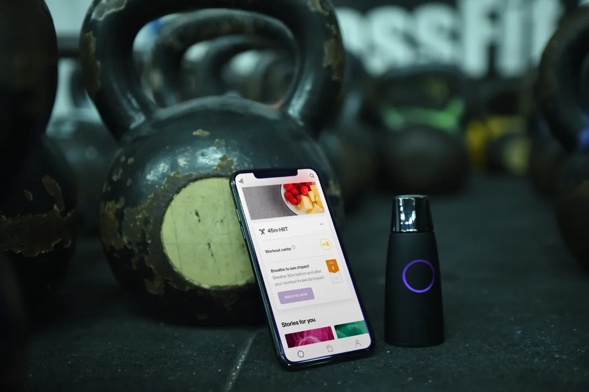

1:1 coaching session every two weeks (video call): your plan reviewed, adjusted and held accountable.
The Metabolic Flex training app: your weekly strength program, daily check-ins and progress.
Free Lumen metabolic device ($249 value) with 12 months of Lumen membership: see from your breath whether you're burning fat or carbs, and plan meals around it.
GFC Lab access: evaluation by licensed clinicians for GLP-1 medications, peptide therapy or hormone therapy, when appropriate.
Muscle-first nutrition: protein targets and meal timing built around your Lumen data.
Protein first, vegetables second, carbs last: meals built to keep blood sugar steady.

Your free Lumen device and app: a breath each morning shows fat vs. carb burn.
How it works: a science-driven approach
Each step follows the research on muscle, blood sugar, meal timing, sleep and accountability
(see the studies). We measure first, use the right tools, and build the habits that keep results.
Take the Metabolic Score (2 minutes, free).
Free 30-minute strategy call to see if the program fits.
Enroll: your Lumen ships and your training app is set up.
Optional GFC Lab visit with a licensed clinician for medication or hormones.
Every two weeks: a session with your coach. Every day: a 60-second check-in.
Why three months?
Because that is how long the measurement takes. HbA1c — the standard marker for how your body handles sugar — reflects the previous two to three months, because that is how long a red blood cell lives. Test at six weeks and you are still reading the old you.
Twelve weeks is the standard window in the trials that improve insulin sensitivity — it is the length the research itself uses.
Habits take about 66 days on average to become automatic, not the 21 days you have been told.
Metabolic change builds quietly for years before a routine blood test picks it up. What took years does not come apart in ten days.
Three months is the shortest program that can honestly show you a result. It is where we start, not where we finish.
Coaching, not medical treatment. If you have a diagnosed condition, work with your physician — this runs alongside their care, never instead of it.
Investment
Already know this is for you? Sign up and pay securely below — no need to wait for a call. Prefer to talk it through first? Take the Metabolic Score or book a call instead.
Phase 1: Foundation
$399/month · 3-month minimum
Everything above, including the free Lumen.
Why three months? HbA1c reflects the previous two to three months, so
a shorter program cannot honestly show you a result. The
full reason →
GFC Lab medical visits, labs and medications are provided and billed by our licensed telehealth partner, separately from coaching. Billing is monthly and automatic; minimum-commitment terms are part of your enrollment agreement.
No. Medication is one tool, not a requirement. Many clients never use it. If you do, we build the training and nutrition that protect your muscle and prepare you to need it less.
I already use a GLP-1. Is this for me?
Yes, and it's one of the most important times to have a coach. Strength training and protein help you keep muscle while you lose fat.
Is this in person or online?
Online, from anywhere. Local clients can also train at GFC Xtreme.
What if I cancel early?
The first phase is a 3-month commitment. Your Lumen is yours to keep.
Do you replace my doctor?
No. Coaching works alongside your medical care. Keep your doctor informed of changes to your routine.